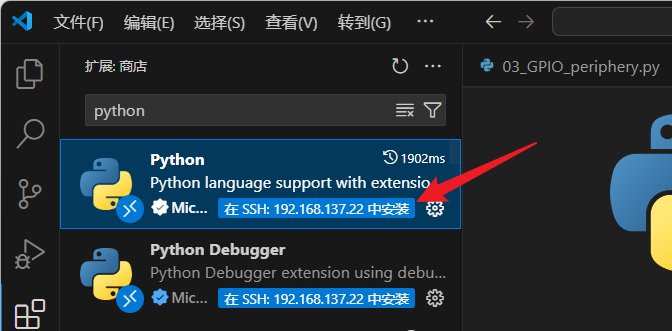

<!DOCTYPE lake>
<p data-lake-id="u9d1e70be" id="u9d1e70be"><span class="lake-fontsize-12" data-lake-id="u6d5c1c30" id="u6d5c1c30" style="color: rgb(64, 64, 64); background-color: rgb(252, 252, 252)">在泰山派板卡上开发纯软件类型的Python应用程序与PC上并无区别， 使用Python控制板卡上的GPIO、PWM、ADC、I2C及SPI等外围接口时，主要使用到了如下的Python包：</span></p><ul list="ue1723808"><li data-lake-id="u61ad7bec" fid="ubb90aae6" id="u61ad7bec"><a data-lake-id="u68d85373" href="https://git.kernel.org/pub/scm/libs/libgpiod/libgpiod.git/about/" id="u68d85373" rel="noopener noreferrer" target="_blank"><span data-lake-id="u25d6cce7" id="u25d6cce7">python3-libgpiod</span></a><span class="lake-fontsize-12" data-lake-id="u58e51d2d" id="u58e51d2d" style="color: rgb(64, 64, 64); background-color: rgb(252, 252, 252)">：标准GPIO libgpiod库的python版本，只支持控制IO输入输出。</span></li><li data-lake-id="u0fe16589" fid="ubb90aae6" id="u0fe16589"><a data-lake-id="u6b3dd0b9" href="https://python-periphery.readthedocs.io/en/latest/index.html" id="u6b3dd0b9" rel="noopener noreferrer" target="_blank"><span data-lake-id="u572351af" id="u572351af">python-periphery</span></a><span class="lake-fontsize-12" data-lake-id="u3c214825" id="u3c214825" style="color: rgb(64, 64, 64); background-color: rgb(252, 252, 252)">：支持GPIO、PWM、I2C、SPI、UART等多种接口的基础控制。</span></li></ul><h1 data-lake-id="LHFWw" id="LHFWw"><span data-lake-id="uace2b5d7" id="uace2b5d7" style="color: rgb(64, 64, 64); background-color: rgb(252, 252, 252)">libgpiod基本概念</span></h1><p data-lake-id="u5e094049" id="u5e094049"><span class="lake-fontsize-12" data-lake-id="u59f97eb1" id="u59f97eb1" style="color: rgb(64, 64, 64); background-color: rgb(252, 252, 252)">GPIO主要用来对外输出高低电平，控制GPIO时，基本都会涉及到 libgpiod 的控制， 我们主要需要知道板卡引脚的命名方式即可。</span></p><p data-lake-id="u4fbd606e" id="u4fbd606e"><span class="lake-fontsize-12" data-lake-id="u711f32c4" id="u711f32c4" style="color: rgb(64, 64, 64); background-color: rgb(252, 252, 252)">CPU的GPIO引脚使用 </span><span class="lake-fontsize-9" data-lake-id="uc9aecb8c" id="uc9aecb8c" style="color: rgb(231, 76, 60); background-color: rgb(252, 252, 252)">(chip, line)</span><span class="lake-fontsize-12" data-lake-id="u517f3b62" id="u517f3b62" style="color: rgb(64, 64, 64); background-color: rgb(252, 252, 252)"> 的方式命名，使用以下命令可以查看：</span></p><span class="yuque-card-unsupported">[codeblock]</span><p data-lake-id="u2505999f" id="u2505999f"><span class="lake-fontsize-12" data-lake-id="uf39613d7" id="uf39613d7" style="color: rgb(64, 64, 64); background-color: rgb(252, 252, 252)">而板卡引出的排针接口与GPIO (chip, line)的对应方式可查看板卡具体的说明。</span></p><h1 data-lake-id="RAjal" id="RAjal"><span data-lake-id="ufba9d018" id="ufba9d018" style="color: rgb(64, 64, 64); background-color: rgb(252, 252, 252)">方式一：使用python3-libgpiod</span></h1><h2 data-lake-id="sPwGq" data-lake-index-type="2" id="sPwGq"><span data-lake-id="u6718244d" id="u6718244d" style="color: rgb(64, 64, 64); background-color: rgb(252, 252, 252)">安装 python3-libgpiod</span></h2><p data-lake-id="u72300958" id="u72300958"><span class="lake-fontsize-12" data-lake-id="ud6c9a9fb" id="ud6c9a9fb" style="color: rgb(64, 64, 64); background-color: rgb(252, 252, 252)">利用 </span><a data-lake-id="u95d1baaf" href="https://git.kernel.org/pub/scm/libs/libgpiod/libgpiod.git/about/" id="u95d1baaf" rel="noopener noreferrer" target="_blank"><span data-lake-id="u9169f50f" id="u9169f50f">python3-libgpiod</span></a><span class="lake-fontsize-12" data-lake-id="ud01a9433" id="ud01a9433" style="color: rgb(64, 64, 64); background-color: rgb(252, 252, 252)"> 软件包，可以轻松使用Python控制GPIO引脚。 目前 </span><a data-lake-id="uf9d82a34" href="https://git.kernel.org/pub/scm/libs/libgpiod/libgpiod.git/about/" id="uf9d82a34" rel="noopener noreferrer" target="_blank"><span data-lake-id="u71dff9a2" id="u71dff9a2">python3-libgpiod</span></a><span class="lake-fontsize-12" data-lake-id="u0d263ee8" id="u0d263ee8" style="color: rgb(64, 64, 64); background-color: rgb(252, 252, 252)"> 没有官方文档说明，可使用import该软件包后使用help查看帮助， 它的安装及查看帮助方式如下：</span></p><span class="yuque-card-unsupported">[codeblock]</span><h2 data-lake-id="SpbpF" data-lake-index-type="2" id="SpbpF"><span data-lake-id="u4b89757b" id="u4b89757b" style="color: rgb(64, 64, 64); background-color: rgb(252, 252, 252)">libgpiod输出</span></h2><p data-lake-id="ua5f9a61c" id="ua5f9a61c"><span class="lake-fontsize-12" data-lake-id="u7ee89778" id="u7ee89778" style="color: rgb(64, 64, 64); background-color: rgb(252, 252, 252)">使用这个 </span><a data-lake-id="ud7696af9" href="https://git.kernel.org/pub/scm/libs/libgpiod/libgpiod.git/about/" id="ud7696af9" rel="noopener noreferrer" target="_blank"><span data-lake-id="u3c1b009e" id="u3c1b009e">python3-libgpiod</span></a><span class="lake-fontsize-12" data-lake-id="u5f0613ab" id="u5f0613ab" style="color: rgb(64, 64, 64); background-color: rgb(252, 252, 252)"> 包控制GPIO点灯（输出）的示例代码如下：</span></p><span class="yuque-card-unsupported">[codeblock]</span><p data-lake-id="uedc40e63" id="uedc40e63"><span class="lake-fontsize-12" data-lake-id="uf0ebcec2" id="uf0ebcec2" style="color: rgb(64, 64, 64); background-color: rgb(252, 252, 252)">代码说明：</span></p><ul list="u1b6edc40"><li data-lake-id="u5c86fe47" fid="u0531e08a" id="u5c86fe47"><span class="lake-fontsize-12" data-lake-id="u884bb2c7" id="u884bb2c7" style="color: rgb(64, 64, 64); background-color: rgb(252, 252, 252)">第7行，创建了一个chip ID为0的gpiod.Chip对象chip0</span></li><li data-lake-id="u129cc4b7" fid="u0531e08a" id="u129cc4b7"><span class="lake-fontsize-12" data-lake-id="u72ee559a" id="u72ee559a" style="color: rgb(64, 64, 64); background-color: rgb(252, 252, 252)">第9行，设置使用chip0对象的line15作为引脚</span></li><li data-lake-id="u549437b6" fid="u0531e08a" id="u549437b6"><span class="lake-fontsize-12" data-lake-id="u6a0ee059" id="u6a0ee059" style="color: rgb(64, 64, 64); background-color: rgb(252, 252, 252)">第10行，申请gpio，设置为输出，默认输出低电平</span></li></ul><p data-lake-id="ucfad5d9e" id="ucfad5d9e"><span class="lake-fontsize-12" data-lake-id="u0027d1d9" id="u0027d1d9" style="color: rgb(64, 64, 64); background-color: rgb(252, 252, 252)">后面的代码直接使用gpio0_b0对象控制选定的GPIO输出高低电平，从而达到控制LED灯的亮灭。</span></p><p data-lake-id="ufaa80f1b" id="ufaa80f1b"><span class="lake-fontsize-12" data-lake-id="u1589990c" id="u1589990c" style="color: rgb(64, 64, 64); background-color: rgb(252, 252, 252)">使用如下命令执行:</span></p><span class="yuque-card-unsupported">[codeblock]</span><p data-lake-id="u039af33d" id="u039af33d"><span class="lake-fontsize-12" data-lake-id="u8b6093c9" id="u8b6093c9">权限被拒绝可以修改权限</span></p><span class="yuque-card-unsupported">[codeblock]</span><h2 data-lake-id="CrTeY" data-lake-index-type="2" id="CrTeY"><span data-lake-id="ud53db9f7" id="ud53db9f7" style="color: rgb(64, 64, 64); background-color: rgb(252, 252, 252)">libgpiod输入输出</span></h2><p data-lake-id="u6f1aed1b" id="u6f1aed1b"><span class="lake-fontsize-12" data-lake-id="u99a78ed4" id="u99a78ed4" style="color: rgb(64, 64, 64); background-color: rgb(252, 252, 252)">每隔1秒读取一次GPIO0_B7的值并打印</span></p><span class="yuque-card-unsupported">[codeblock]</span><p data-lake-id="u2b8881a2" id="u2b8881a2"><span class="lake-fontsize-12" data-lake-id="ud8096fd4" id="ud8096fd4" style="color: rgb(64, 64, 64); background-color: rgb(252, 252, 252)">类似地，使用这个 </span><a data-lake-id="u48ed97ef" href="https://git.kernel.org/pub/scm/libs/libgpiod/libgpiod.git/about/" id="u48ed97ef" rel="noopener noreferrer" target="_blank"><span data-lake-id="ueeb03a40" id="ueeb03a40">python3-libgpiod</span></a><span class="lake-fontsize-12" data-lake-id="u1a29aed3" id="u1a29aed3" style="color: rgb(64, 64, 64); background-color: rgb(252, 252, 252)"> 包检测GPIO输入（按键）的示例代码如下：</span></p><span class="yuque-card-unsupported">[codeblock]</span><p data-lake-id="u53e22356" id="u53e22356"><span class="lake-fontsize-12" data-lake-id="u75896732" id="u75896732" style="color: rgb(64, 64, 64); background-color: rgb(252, 252, 252)">代码说明：</span></p><ul list="udbeeb2f3"><li data-lake-id="u3617b1d5" fid="u5fa964c6" id="u3617b1d5"><span class="lake-fontsize-12" data-lake-id="u65990d94" id="u65990d94" style="color: rgb(64, 64, 64); background-color: rgb(252, 252, 252)">第13行，设置LED的GPIO控制方向为输出</span></li><li data-lake-id="ub6a11612" fid="u5fa964c6" id="ub6a11612"><span class="lake-fontsize-12" data-lake-id="uf22a5a97" id="uf22a5a97" style="color: rgb(64, 64, 64); background-color: rgb(252, 252, 252)">第16行，设置按键的GPIO控制方向为输入</span></li><li data-lake-id="u7cefd352" fid="u5fa964c6" id="u7cefd352"><span class="lake-fontsize-12" data-lake-id="u6341186a" id="u6341186a" style="color: rgb(64, 64, 64); background-color: rgb(252, 252, 252)">第23行，读取按键引脚的输入值来控制LED</span></li></ul><h1 data-lake-id="uxR1n" id="uxR1n"><span data-lake-id="ubefdf501" id="ubefdf501" style="color: rgb(64, 64, 64); background-color: rgb(252, 252, 252)">方式二：使用python-periphery</span></h1><h3 data-lake-id="y7z6f" id="y7z6f"><span data-lake-id="u226f069a" id="u226f069a" style="color: rgb(64, 64, 64); background-color: rgb(252, 252, 252)">安装python-periphery</span></h3><p data-lake-id="u4567ada6" id="u4567ada6"><a data-lake-id="u95b5c7c3" href="https://python-periphery.readthedocs.io/en/latest/index.html" id="u95b5c7c3" rel="noopener noreferrer" target="_blank"><span data-lake-id="u35b1627e" id="u35b1627e">python-periphery</span></a><span class="lake-fontsize-12" data-lake-id="u08659d49" id="u08659d49" style="color: rgb(64, 64, 64); background-color: rgb(252, 252, 252)"> </span><span class="lake-fontsize-12" data-lake-id="uf3840838" id="uf3840838" style="color: rgb(64, 64, 64); background-color: rgb(252, 252, 252)">与</span><span class="lake-fontsize-12" data-lake-id="u1b7b7f45" id="u1b7b7f45" style="color: rgb(64, 64, 64); background-color: rgb(252, 252, 252)"> </span><a data-lake-id="ufe23582d" href="https://git.kernel.org/pub/scm/libs/libgpiod/libgpiod.git/about/" id="ufe23582d" rel="noopener noreferrer" target="_blank"><span data-lake-id="ufcda40e6" id="ufcda40e6">python3-libgpiod</span></a><span class="lake-fontsize-12" data-lake-id="u1102cea0" id="u1102cea0" style="color: rgb(64, 64, 64); background-color: rgb(252, 252, 252)"> </span><span class="lake-fontsize-12" data-lake-id="u42becdf9" id="u42becdf9" style="color: rgb(64, 64, 64); background-color: rgb(252, 252, 252)">的功能类似，但periphery除了支持GPIO输入输出控制外， 还支持I2C、SPI等总线协议。</span></p><p data-lake-id="uc6ed2b1d" id="uc6ed2b1d"><a data-lake-id="uea610d64" href="https://python-periphery.readthedocs.io/en/latest/index.html" id="uea610d64" rel="noopener noreferrer" target="_blank"><span data-lake-id="u1dcc160e" id="u1dcc160e">python-periphery</span></a><span class="lake-fontsize-12" data-lake-id="u2243b12b" id="u2243b12b" style="color: rgb(64, 64, 64); background-color: rgb(252, 252, 252)"> 的安装方式如下：</span></p><span class="yuque-card-unsupported">[codeblock]</span><h2 data-lake-id="WidDq" data-lake-index-type="2" id="WidDq"><span data-lake-id="u7f3b62ba" id="u7f3b62ba" style="color: rgb(64, 64, 64); background-color: rgb(252, 252, 252)">periphery输入输出</span></h2><span class="yuque-card-unsupported">[codeblock]</span><p data-lake-id="u3a0895c8" id="u3a0895c8"><span class="lake-fontsize-12" data-lake-id="ua3d55c7a" id="ua3d55c7a" style="color: rgb(64, 64, 64); background-color: rgb(252, 252, 252)">代码说明：</span></p><ul list="u87bdfe0c"><li data-lake-id="ufc3443dd" fid="ud8b2b1f0" id="ufc3443dd"><span class="lake-fontsize-12" data-lake-id="ubd163bbc" id="ubd163bbc" style="color: rgb(64, 64, 64); background-color: rgb(252, 252, 252)">第5~9行，定义了LED、按键的chip和line编号</span></li></ul><h2 data-lake-id="vI0HO" id="vI0HO"><br/></h2><p data-lake-id="u36dd13d7" id="u36dd13d7"><span class="lake-fontsize-12" data-lake-id="u29128883" id="u29128883">注意：以上代码需要管理员权限才能运行</span></p><p data-lake-id="ue0602781" id="ue0602781"><span class="lake-fontsize-12" data-lake-id="u5fe5a8f9" id="u5fe5a8f9">​</span><br/></p><p data-lake-id="ua5c8ec98" id="ua5c8ec98"><span class="lake-fontsize-12" data-lake-id="u364b7e52" id="u364b7e52">如果没有语法高亮，或者无法跳转，则需要为这个窗口专门安装python插件：</span></p><p data-lake-id="u47066f4c" id="u47066f4c"></p><p data-lake-id="ua41d6958" id="ua41d6958"><span class="lake-fontsize-12" data-lake-id="u6ebb3b10" id="u6ebb3b10">​</span><br/></p><p data-lake-id="ue4d6611f" id="ue4d6611f"><span class="lake-fontsize-12" data-lake-id="u30bca7e4" id="u30bca7e4">​</span><br/></p>